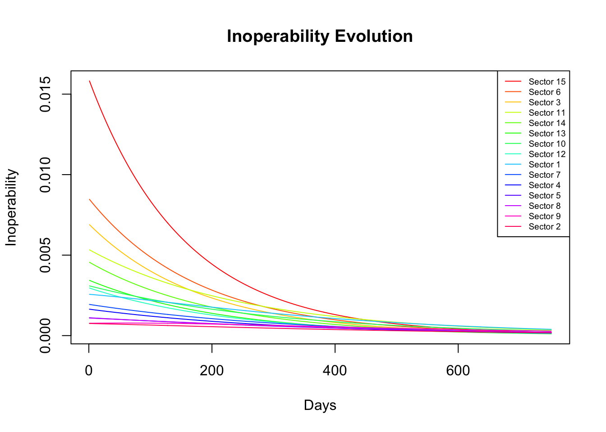
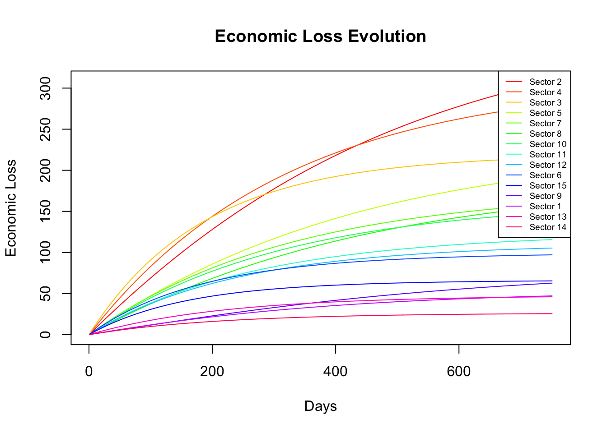
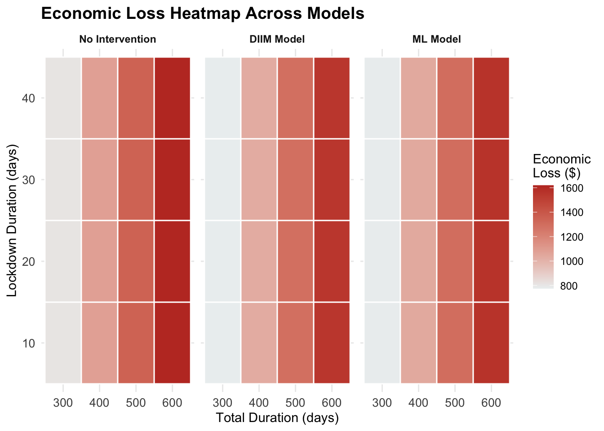
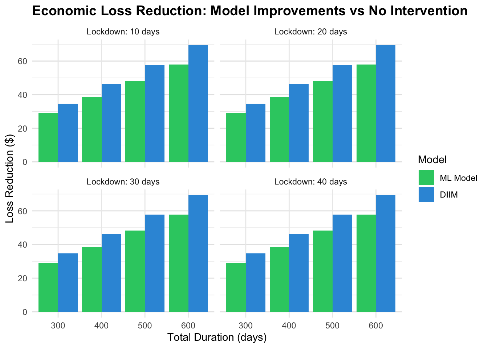
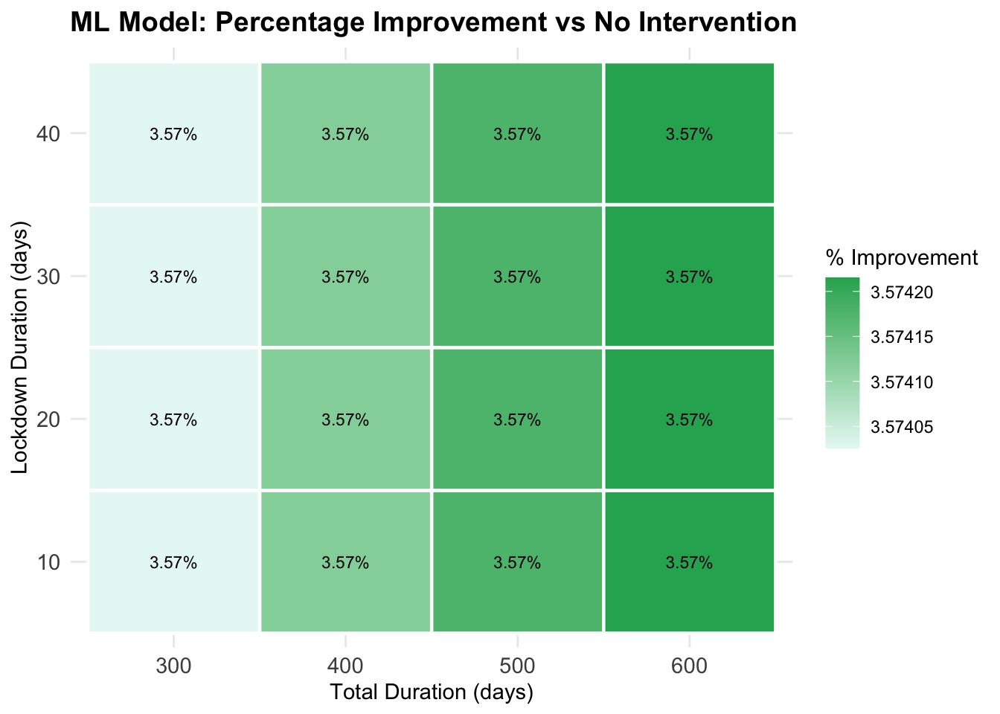
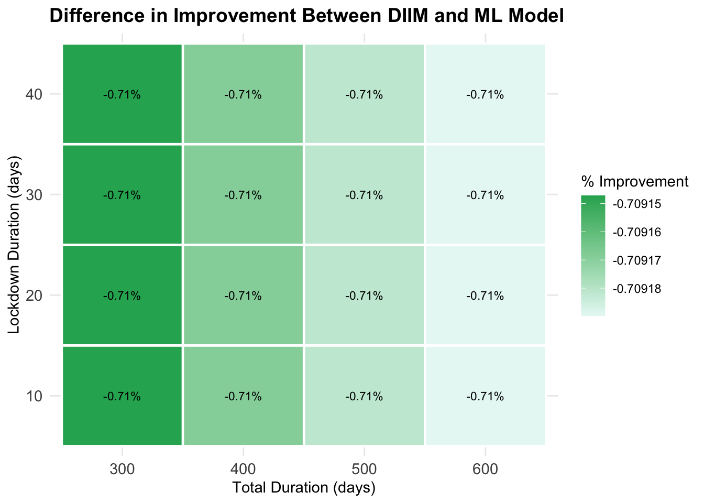
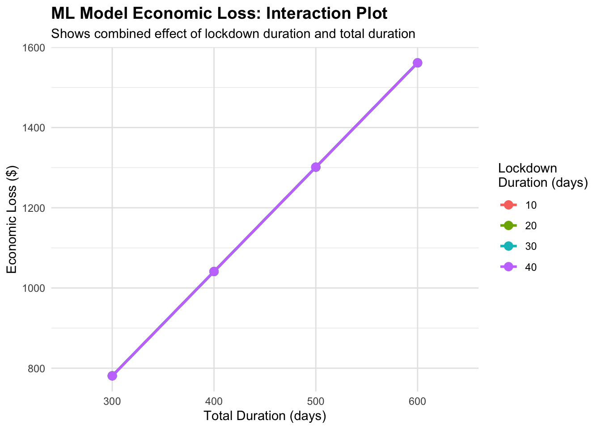
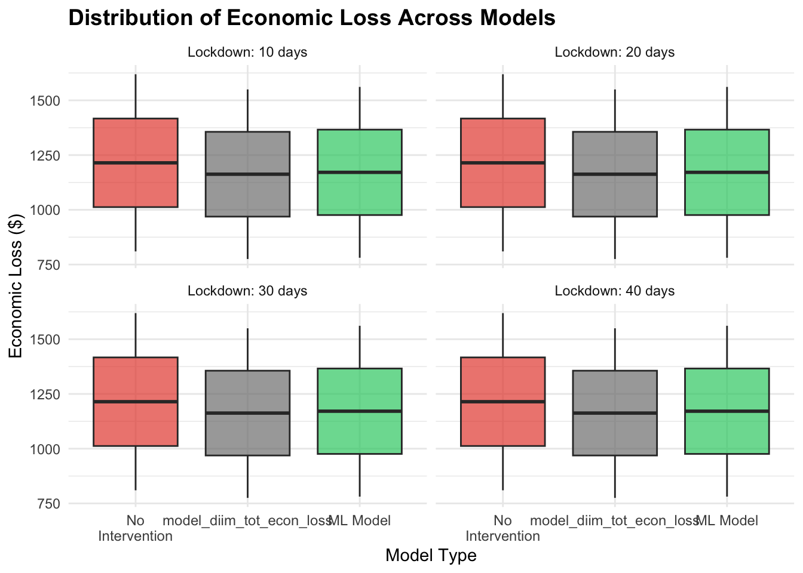

library(openxlsx)
library(ggplot2)
library(reshape2)
library(gridExtra)
library(dplyr)
library(tidyverse)
source("functions.R")DIIM
Download libraries
data = download_data()
A = data$A
x = data$x
c = data$c
q0 = data$q0
c_star = data$c_star
A_star = data$A_star
DIIM_model = DIIM(q0,A_star,c_star,x,lockdown_duration=55, total_duration=751)Inoperability Plot
# Calculate maximum inoperability for each sector over time
inoperability_evolution = DIIM_model$inoperability_evolution
max_inoperability <- apply(inoperability_evolution, 1, max)
# Get the order of sectors sorted by descending maximum inoperability
sorted_indices <- order(max_inoperability, decreasing = TRUE)
# Reorder the inoperability evolution matrix
sorted_inoperability <- inoperability_evolution[sorted_indices, ]
# Optional: get sector names if available (replace 'sector_names')
# sector_names_sorted <- sector_names[sorted_indices]
# Setup colors and labels for plotting
num_sectors <- nrow(sorted_inoperability)
matplot(t(sorted_inoperability), type = 'l', lty = 1, col = rainbow(num_sectors),
xlab = 'Days', ylab = 'Inoperability',
main = 'Inoperability Evolution')
legend('topright', legend = paste('Sector', sorted_indices), col = rainbow(num_sectors), lty = 1, cex = 0.6)
Economic Loss Plot
EL_evolution = DIIM_model$EL_evolution
max_econ_loss <- apply(EL_evolution, 1, max)
sorted_indices <- order(max_econ_loss, decreasing = TRUE)
sorted_econ_loss <- EL_evolution[sorted_indices, ]
num_sectors <- nrow(sorted_econ_loss)
matplot(t(sorted_econ_loss), type = 'l', lty = 1, col = rainbow(num_sectors),
xlab = 'Days', ylab = 'Economic Loss',
main = 'Economic Loss Evolution')
legend('topright', legend = paste('Sector', sorted_indices), col = rainbow(num_sectors), lty = 1, cex = 0.6)
Sensitivity Analysis
Impact of altering lockdown duration
output_40_days = DIIM(q0,A_star,c_star,x,lockdown_duration=40, total_duration=751)
economics_loss_40_days = as.matrix(output_40_days$EL_end)
output_55_days = DIIM(q0,A_star,c_star,x,lockdown_duration=55, total_duration=751)
economics_loss_55_days = as.matrix(output_55_days$EL_end)
output_70_days = DIIM(q0,A_star,c_star,x,lockdown_duration=70, total_duration=751)
economics_loss_70_days = as.matrix(output_70_days$EL_end)Risk Management Scenario Analysis
Scenario 1: assume adopt no risk management policy(set policy option j = 0)
In the first hypothetical scenario, assume that policy option j = 0, that is, no risk management measures are taken, and all inoperability and economic losses come from the calculation of the DIIM model result in this paper, which is the real shock occurrence under the DIIM model. Therefore, the economic loss after taking risk management is equal to the economic loss without taking management measures and the execution cost is 0. At the same time, we set scenario 1 as the baseline scenario to facilitate subsequent analysis:
\[ \delta_j = \Gamma_{w[0]} - \Gamma_{w[j]} - \gamma_j = 0\,\text{ } \tag{1}\]
Scenario 2: assume adopt risk management policy (set policy option j = 1)
# evolution of the inoperability under policy 1 where the inoperability is 95% of the original inoperability
policy_j_0 = DIIM(q0, A_star,c_star,x,lockdown_duration=55, total_duration=751,risk_management=1)
policy_j_1 = DIIM(q0, A_star,c_star,x,lockdown_duration=55, total_duration=751,risk_management=0.95)
policy_j_0$total_economic_loss[1] 2026.506policy_j_1$total_economic_loss[1] 2103.948In this scenario, the paper assumed risk management policy 1 that the government will spend 1 billion SGD in advance for risk control to prevent the impact of the sudden spread of the pandemic on the economic system as much as possible. Moreover, suppose that this advanced risk management policy will reduce the impact of the pandemic by 5% every day, and when it acts on the inoperability level, it will only suffer the impact of the 95% degree of original inoperability level each day. Bringing the changed degree of inoperability back into the DIIM model for further analysis, it is found that under the implementation of risk management policy 1, the overall economic loss is 725.3833 million SGD, compared with the previous loss of 11181.38 million SGD, the overall loss is reduced by 10456 million SGD. Therefore, the net benefit is 9456 million SGD, and the cost-benefit ratio is 0.0956389. The specific calculation results are as follows:
\[ \begin{align}\delta_1 &= \Gamma_{w[0]} - \Gamma_{w[1]} - \gamma_1 = 26967.3 - 2323.01 - 1000 = 23644.29\, \textit{million SGD} \\\lambda_{12} &= \frac{\gamma_1}{\Gamma_{w[0]} - \Gamma_{w[1]}} = \frac{1000}{26967.3 - 2323.01} = 0.04057735 \end{align} \]
Scenario 3: assume adopt risk management policy (set policy option j = 2)
policy_j_3 = DIIM(q0, A_star,c_star,x,lockdown_duration=55-20, total_duration=751,risk_management=1)
policy_j_3$total_economic_loss[1] 2026.506Based on risk management policy 2, it assumed that an additional 1 billion SGD investment cost will be added to the expenditure of early prevention and control, resulting in a total investment cost of 2 billion SGD. This approach is to prevent the current and future cascading effects of a wider pandemic on Singapore and to predict the current year’s budget in advance for risk prevention and control. Based on this, the paper wants to calculate the impact of the additional 1 billion SGD of investment cost on the impact of the Singapore pandemic, assuming that this additional expenditure cost can reducing the lockdown period from the initial 55 days to 30 days. The overall economic loss will be reduced from 11181.38 million SGD without risk management measures to 7814.6 million SGD. Therefore, the net benefit is 1366.78 million SGD, the cost-benefit ratio is 0.5940394. The specific calculation process is as follows:
\[ \begin{align*}\delta_2 &= \Gamma_{w[0]} - \Gamma_{w[2]} - \gamma_2 = 26967.3 - 17564.99 - 2000 = 7402.31\, \textit{million SGD} \\\lambda_{12} &= \frac{\gamma_2}{\Gamma_{w[0]} - \Gamma_{w[2]}} = \frac{2000}{26967.3 - 17564.99} = 0.2127137\end{align*} \]
For the risk control management 1, the \(\lambda_{12}\) is 0.0956389 which indicates the government could obtain 1 SGD of benefit for each 0.0956389 SGD of investment cost. As with risk management policy 2, in which the \(\lambda_{12}\) is 0.5940394, the government could obtain 1 SGD of benefit for each 0.5940394 SGD of investment cost. Compared with these two policies, the first risk management measure is better, that is, it has a smaller investment cost under the unit benefit.
Comparison between ML and Traditional Key Sectors Identified
We assume that the risk management policy is able to reduce the initial inoperability of the key sectors by 0.9 of its original
# ml_key_sectors = c(3,2,5,8,10,4,7)
# trad_key_sectors = c(2,3,5,12,8,9,10)
lockdown_duration_vals = c(10,20,30,40)
total_duration_vals = c(300,400,500,600)
nsim = length(lockdown_duration_vals) * length(total_duration_vals)
col_names = c("lockdown_duration",
"total_duration",
"model_tot_econ_loss",
"model_diim_tot_econ_loss",
"model_ml_tot_econ_loss")
sim_matrix = matrix(data=NA, nrow=nsim , ncol=5)
colnames(sim_matrix) = col_names
row_idx = 1
for (l_duration in lockdown_duration_vals){
for (t_duration in total_duration_vals){
res = simulation_ml_vs_diim(q0, A_star,c_star,x,lockdown_duration=l_duration, total_duration=t_duration)
res = matrix(unlist(res), ncol=5)
sim_matrix[row_idx,] = res
row_idx = row_idx + 1
}
}Comparing No Intervention, DIIM, and ML Economic Loss Models
Warning: Using `size` aesthetic for lines was deprecated in ggplot2 3.4.0.
ℹ Please use `linewidth` instead.





Warning: The `<scale>` argument of `guides()` cannot be `FALSE`. Use "none" instead as
of ggplot2 3.3.4.